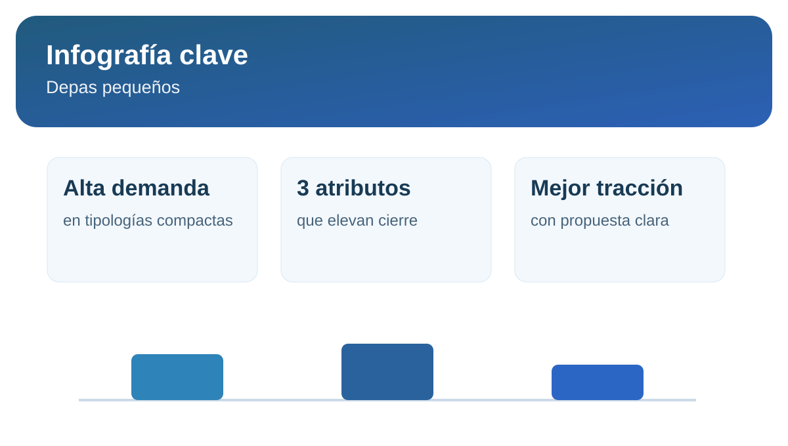

Tendencia 2026: por qué los depas pequeños ganan demanda en Lima
Los metrajes compactos vienen ganando espacio en el mercado de alquiler por cambios en estilo de vida, presupuesto y ubicación. Para propietarios, esto abre oportunidades de colocación más rápida si la estrategia comercial es correcta.
Qué impulsa la demanda
- Mayor preferencia por zonas conectadas.
- Hogares más pequeños y trabajo híbrido.
- Presupuesto orientado a costo total de vida.
Cómo capitalizar esta tendencia
Si tienes un depa pequeño, debes cuidar tres frentes: presentación visual, claridad de propuesta y precio de salida. La combinación adecuada puede mejorar ocupación y estabilidad de ingresos.
Infografía rápida: depas pequeños

Alta rotaciónsi precio y propuesta son competitivos
Perfil objetivojóvenes profesionales y hogares pequeños
Clave comercialpublicación clara + fotos bien trabajadas
Fuentes consultadas
Si tu depa es compacto, valida el precio ideal y acelera el cierre.
Calcular renta recomendada